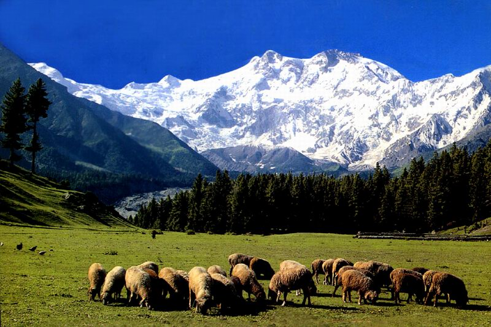

Challenge
Effe bikkelen op een mooie website
Verder kijken
Gepubliceert op 18 Januari door Malina
Alex kjøper ny sykkel Sykkelen til Alexander har blitt stjålet. Han har forsikring, så han får igjen pengene. Alexander trenger derfor en ny sykkel. Han sykler til trening og skole hver dag. Han har ikke lyst til å kjøpe en dyr sykkel, for denne kan også bli stjålet. Derfor velger Alexander seg en helt grei og billig ny sykkel. Han har tittet på mange forskjellige sykler, i forskjellige sportsbutikker. Nå har Alexander kjøpt en grei og ny sykkel, med en ny og bedre lås, som gjør den vanskeligere å stjele. Han er veldig fornøyd med den nye sykkelen.
Hedda aker i akebakken Det har snødd tre ganger de siste to ukene, så det er derfor masse snø i akebakken. Hedda liker å ake. Etter skolen pleier hun og vennene hennes å gå til akebakken for å ake. De aker ofte i tog, tre og tre. Alle har akebrett. Noen har rød, andre blå. Hedda sitt akebrett er rosa. Hedda liker fargen rosa. Broren til Hedda, Sondre, har blått akebrett. Hedda og vennene hennes aker helt til det blir mørkt.

In het nieuws
← Vorig bericht
BackpackingVolgend bericht →
Tis weer lenteLaatste berichten
Dieren in het nieuws